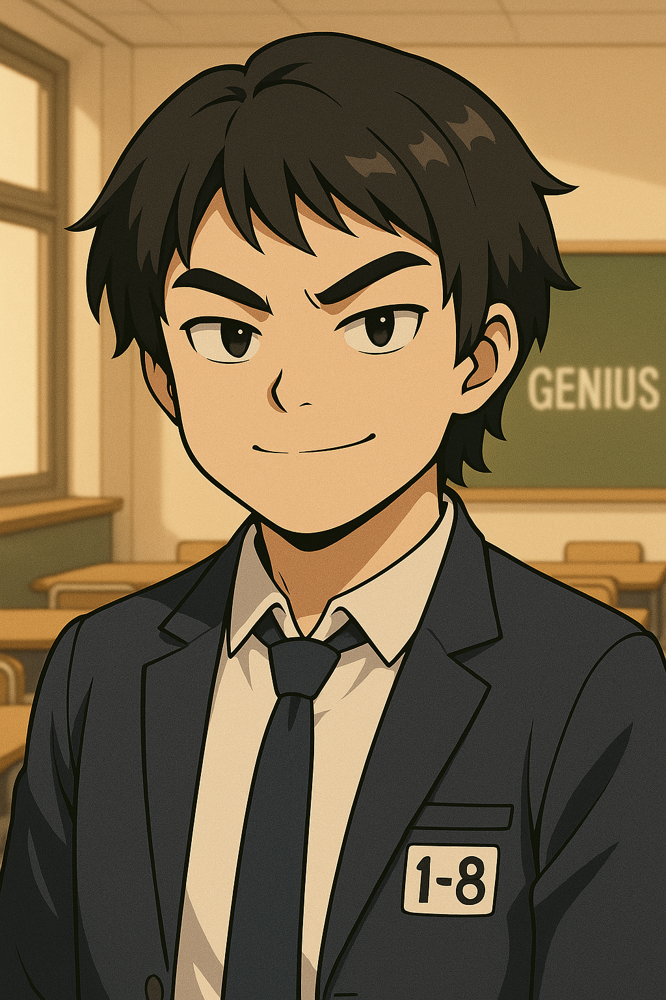
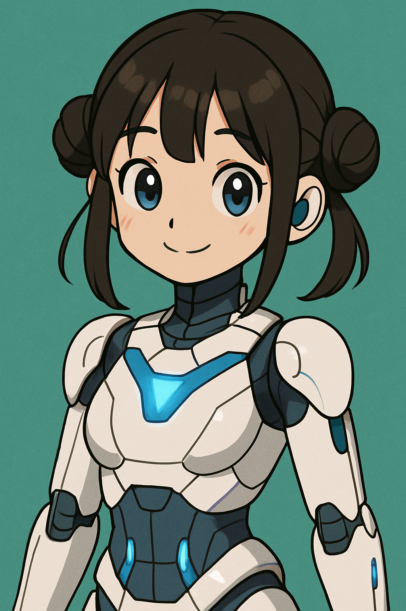
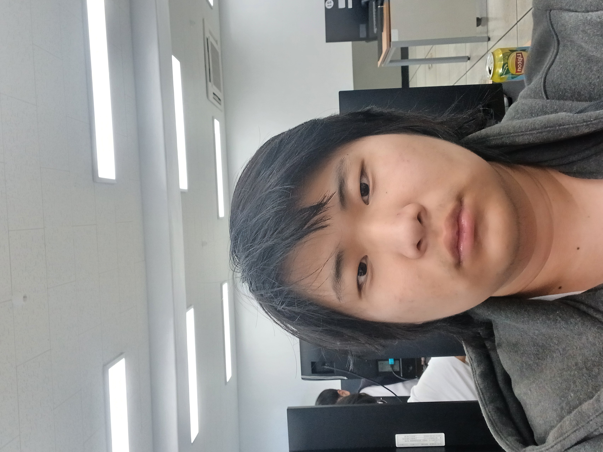
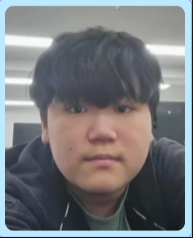
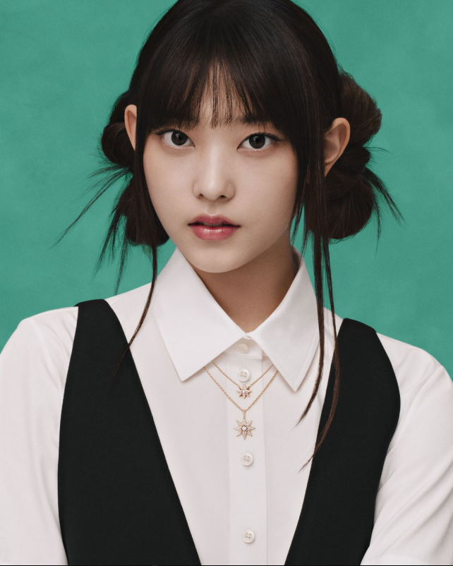
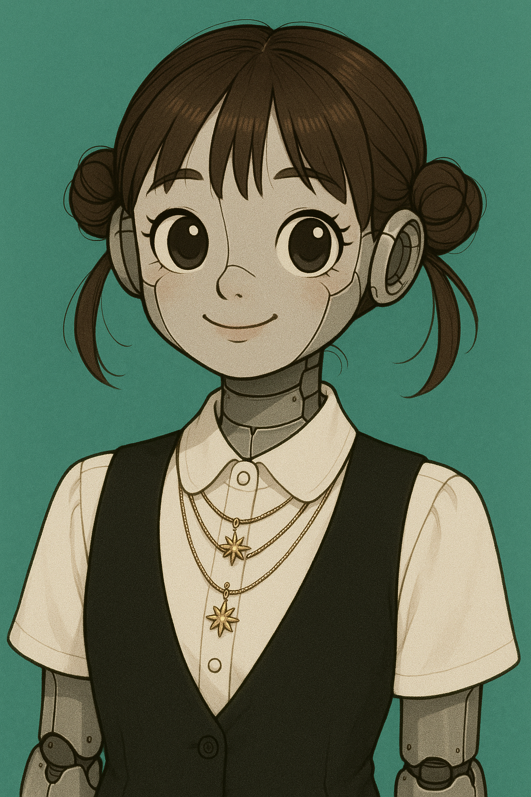
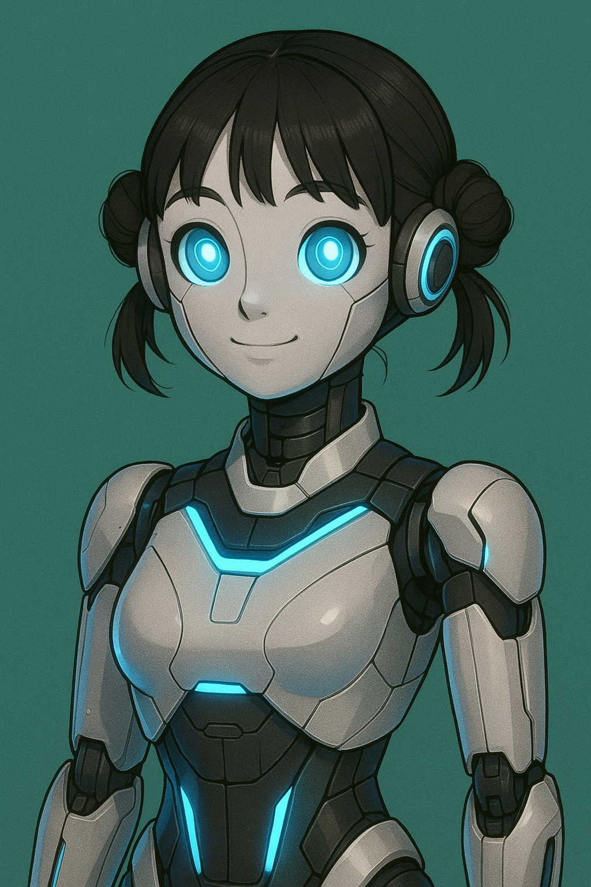
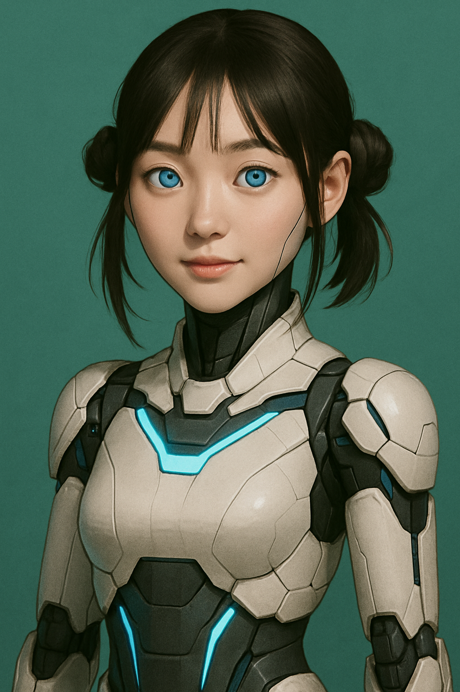

저희팀(현패밀리)를 소개합니다

신주현
- 좋아하는 것: 게임
- 잘하는 것: 게임
- 강점 키워드: 천재
- 관심 직업군: 프로그래머, 게임개발자
- 지금의 나 (한 문장): 천재가 되기 위한 발아 단계
- 미래의 나 (한 문장): 완벽한 천재
- 미래 상상 (직업/성격): 천재(게임개발자)
- 슬로건: 살 수 있는데까지 살자

노승현
- 좋아하는 것: 해린
- 잘하는 것: 게임제작
- 강점 키워드: 열정
- 관심 직업군: 프로그래머, 게임개발자
- 지금의 나 (한 문장): 지금의 나다
- 미래의 나 (한 문장): 미래의 나다
- 미래 상상 (직업/성격): 게임개발자
- 슬로건: 포기하지 말자

해린봇v2
- 좋아하는 것: 고양이
- 잘하는 것: 춤
- 강점 키워드: 고양이
- 관심 직업군: 아이돌
- 지금의 나 (한 문장): 아이돌
- 미래의 나 (한 문장): 슈퍼 아이돌
- 미래 상상 (직업/성격): 레전드 슈퍼 아이돌
- 슬로건: 포기하지 말자
프롬프트
신주현의 프롬프트

- 신주현은 1학년 8반 학생이고 자신이 천재라고 생각하고 똑똑해
- 이미지로 만들어줘
- 캐릭터스타일로 만들어줘
- 나 안경안썻어!
- 완성본!
노승현의 프롬프트

- 이걸로 이미지 만들어줘
- 지브리스타일로 그려줘
- 완성본!
해린봇v2의 프롬프트




- 이 사진을 닮은 AI 로봇을 그려줘
- 너무 무서운데 귀엽게 다시 그려줘
- 미래적인 로봇을 그려줘
- 약간 사람같이
- 귀여운 캐릭터같은 사람같은것을 캐릭터처럼 그리라고!!!!!!!!!!!!!!!!!!!!!!!!!!!!!!!!!!!!!!!!
- 완성본!